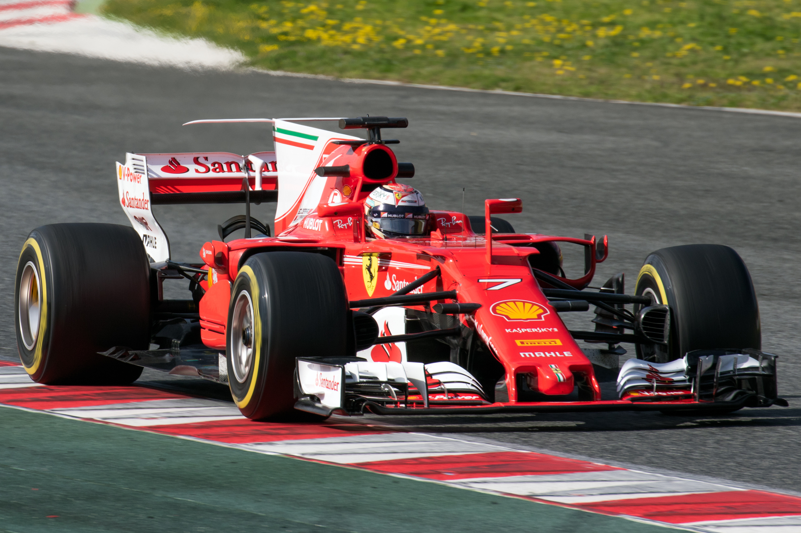

Hey guys my name is Fulton, and this is my fan page about Formula 1!
Pictured: Kimi Räikkönen during preseason testing, Feb 2017
| Position | Driver | Points |
|---|---|---|
| 1 | Sebastian Vettel | 104 |
| 2 | Lewis Hamilton | 98 |
| 3 | Valtteri Bottas | 63 |
| 4 | Kimi Räikkönen | 49 |
| 5 | Daniel Ricciardo | 37 |
You can see the full driver standings here.
You can see the complete list of F1 drivers champions here.